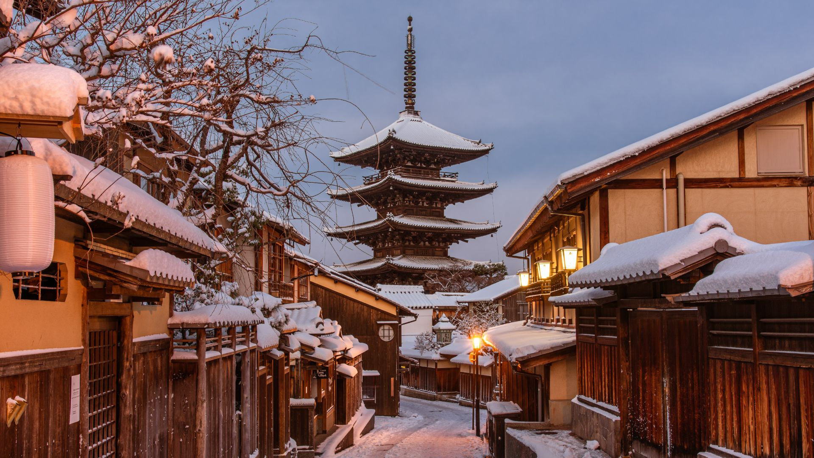

Lo más destacado de Japón

Tokyo
Capital ultramoderna con distritos únicos, tecnología de vanguardia y una increíble oferta gastronómica y cultural.

Kyoto
Antigua capital imperial con más de 1.600 templos budistas, 400 santuarios sintoístas y palacios preservados.

Monte Fuji
El icónico volcán de 3.776 metros de altura, símbolo de Japón y Patrimonio de la Humanidad por la UNESCO.